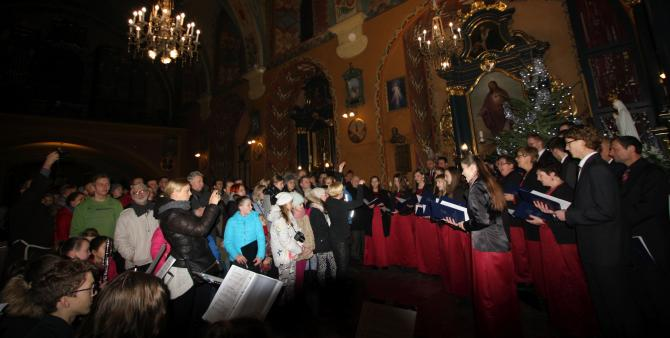
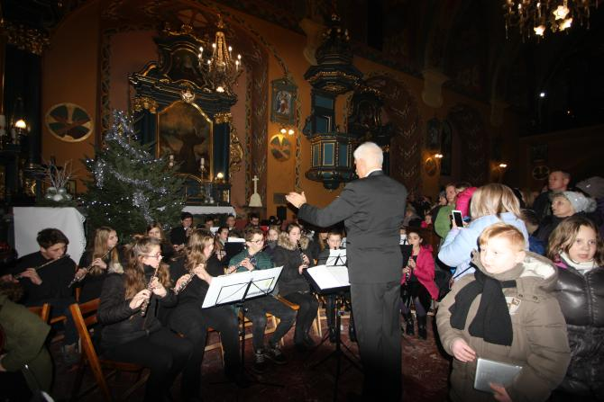

do aktualności
do aktualności2017-01-06
Już po raz 11 spotykamy się z mieszkańcami Wieliczki, aby wspólnie śpiewać kolędy.
Pomysłodawcą i organizatorem imprezy jesteśmy MY, czyli Stowarzyszenie Muzyczne – Chór Camerata, a partnerami O. Gwardian Jacek Biegajło – Proboszcz Parafii Św. Franciszka z Asyżu w Wieliczce i Szkoła Muzyczna I stopnia w Wieliczce.
Zaczynamy od Mszy Św.,którą chóry oprawiają muzycznie.
Koncert rozpoczął gdowski chór Tutte le Corde pod dyr. Elżbiety Gawryszewskiej, który właśnie obchodzi jubileusz 10-lecia istnienia.

Kolejno zaprezentował chór Camerata pod dyr. Izabeli Szoty, który powstał równo 20 lat temu i właśnie tym koncertem rozpoczął swój jubileusz.
Jubileusz 10-lecia działalności świętuje także Szkoła Muzyczna I stopnia w Wieliczce, która z tej okazji wspólnie z Publiczną Szkołą Muzyczną I stopnia w Gdowie wydała płytę „Dzień to jest dziś wesela…” z kolędami w opr. Leszka Wojtala. XI Wielicki Wieczór Kolęd stał się znakomitą okazją do zaprezentowania kilku nagranych kolęd w wykonaniu połączonych chórów szkół muzycznych z Wieliczki (przyg. Izabela Szota) i Gdowa (przyg. Elżbieta Gawryszewska) oraz Międzyszkolnej Orkiestry Symfonicznej pod dyr. Adama Czyżowskiego (przyg. orkiestry Aleksandra Szota i Jarosław Murzyn).
Całość prowadziła Izabela Szota.
Jeszcze pamiątkowe dyplomy
i podziękowania.
Na zakończenie cały kościół rozbrzmiewał kolędami w wykonaniu wszystkich wykonawców oraz licznie zgromadzonej publiczności, którym towarzyszyła Międzyszkolna Orkiestra Dęta pod dyr. Adama Czyżowskiego (przyg. orkiestry Antoni Majerski).

A musicie przyznać, że zgromadzonej publiczności było "sporo".
Bardzo dziękuję pani A.Rogalskiej "FOTO Rogalska" za udostępnienie zdjęć.
do aktualności

 Prowadzenie strony i zdjęcia: Małgorzata Wysocka-Cebula
Prowadzenie strony i zdjęcia: Małgorzata Wysocka-Cebula